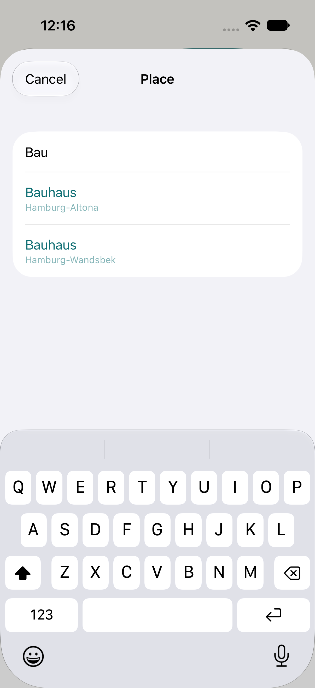
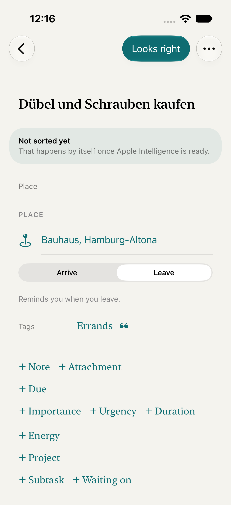

<title>Ort setzen, Entwurf 3b</title>
<meta name="claude:viewport-fit-sides" content="cover">
<style>
/* Layout: eine Seite, drei Stationen untereinander (Heute, Entwurf A, Entwurf B). Jede Station zeigt Hell und Dunkel nebeneinander in Telefonrahmen mit den echten Farben der App (Papier, Teal). */
:root {
  --bg: #ecebe6; --fg: #1b1d1c; --mute: #5d625f; --line: #cfcdc4; --card: #f7f6f1;
  --app-ground: #f4f3ee; --app-fg: #1c1e1d; --app-mute: #6f7471; --app-line: #d8d6cd; --app-accent: #0f6e73; --app-sheet: #f2f2f7; --app-card: #ffffff; --app-tint: rgba(15,110,115,.12); --app-red: #b3261e;
  --font-body: "IBM Plex Sans", system-ui, -apple-system, "Segoe UI", sans-serif;
  --font-mono: "IBM Plex Mono", ui-monospace, "SF Mono", Menlo, monospace;
}
@media (prefers-color-scheme: dark) { :root:not([data-theme="light"]) { --bg: #101211; --fg: #e9ebe8; --mute: #9aa09c; --line: #2c302e; --card: #181a19; color-scheme: dark; } }
:root[data-theme="dark"] { --bg: #101211; --fg: #e9ebe8; --mute: #9aa09c; --line: #2c302e; --card: #181a19; color-scheme: dark; }
.phone.dark { --app-ground: #171816; --app-fg: #ecefec; --app-mute: #9aa09c; --app-line: #2e312f; --app-accent: #5fc4c9; --app-sheet: #1c1c1e; --app-card: #2c2c2e; --app-tint: rgba(95,196,201,.16); --app-red: #f2867f; }
</style>
<link rel="stylesheet" href="https://fonts.googleapis.com/css2?family=IBM+Plex+Mono:wght@400;500&family=IBM+Plex+Sans:wght@400;500;600&display=swap">
<style>
* { box-sizing: border-box; }
body { background: var(--bg); color: var(--fg); font-family: var(--font-body); font-size: 15px; line-height: 1.5; padding-block: 28px 56px; padding-left: max(16px, env(safe-area-inset-left, 0px)); padding-right: max(16px, env(safe-area-inset-right, 0px)); }
main { max-width: 1040px; margin: 0 auto; display: flex; flex-direction: column; gap: 44px; }
h1 { font-size: 26px; line-height: 1.2; margin: 0 0 8px; text-wrap: balance; font-weight: 600; }
h2 { font-size: 18px; margin: 0 0 4px; font-weight: 600; text-wrap: balance; }
p { margin: 0; max-width: 65ch; }
.mute { color: var(--mute); }
.tag { font-family: var(--font-mono); font-size: 12px; letter-spacing: .08em; text-transform: uppercase; color: var(--mute); }
section { display: flex; flex-direction: column; gap: 16px; }
.row { display: flex; flex-wrap: wrap; gap: 28px; }
.col { display: flex; flex-direction: column; gap: 10px; min-width: 0; }
.cap { font-size: 13px; color: var(--mute); max-width: 300px; }
.notes { border-top: 1px solid var(--line); padding-top: 12px; display: grid; gap: 6px; font-size: 14px; max-width: 70ch; }
.notes b { font-weight: 600; }

/* Telefonrahmen */
.phone { width: 300px; background: var(--app-ground); color: var(--app-fg); border-radius: 30px; border: 1px solid var(--line); overflow: hidden; position: relative; font-size: 15px; }
.phone .bar { height: 26px; }
.sheet { background: var(--app-sheet); min-height: 400px; border-radius: 18px 18px 0 0; padding: 0 0 14px; }
.sheet .head { display: flex; justify-content: space-between; align-items: center; padding: 14px 16px 10px; font-weight: 600; }
.sheet .head .l { color: var(--app-accent); font-weight: 400; }
.sheet .head .r { width: 54px; }
.card { margin: 6px 14px 0; background: var(--app-card); border-radius: 18px; overflow: hidden; }
.card .item:first-of-type { border-top: 0; }
.field { padding: 12px 16px; color: var(--app-mute); font-size: 14px; }
.item span { color: var(--app-accent); }
.item { display: flex; align-items: center; gap: 12px; padding: 11px 16px; border-top: 1px solid var(--app-line); }
.item svg, .detail svg { width: 18px; height: 18px; flex: none; stroke: var(--app-accent); fill: none; stroke-width: 1.6; stroke-linecap: round; stroke-linejoin: round; }
.item small, .hit small { display: block; font-size: 12px; color: var(--app-mute); }
.hit { padding: 10px 16px; border-top: 1px solid var(--app-line); }
.sec { padding: 12px 16px 0; font-size: 11px; letter-spacing: 1px; text-transform: uppercase; font-weight: 600; color: var(--app-mute); }
.detail { padding: 6px 0 16px; }
.detail .line { display: flex; align-items: center; gap: 12px; padding: 11px 16px; border-top: 1px solid var(--app-line); }
.detail .foot { padding: 6px 16px 0; font-size: 12px; color: var(--app-mute); display: grid; gap: 3px; }
.seg { margin: 8px 16px; display: grid; grid-template-columns: 1fr 1fr; background: var(--app-tint); border-radius: 9px; padding: 2px; font-size: 14px; text-align: center; }
.seg span { padding: 6px; border-radius: 7px; }
.seg .on { background: var(--app-ground); font-weight: 500; }
.pending { color: var(--app-mute); }
.off { color: var(--app-red); }

/* Entwurf B: Kapseln statt Zeilen */
.chips { display: flex; flex-wrap: wrap; gap: 8px; padding: 4px 16px 12px; border-top: 1px solid var(--app-line); }
.chip { display: inline-flex; align-items: center; gap: 7px; padding: 8px 13px; border-radius: 999px; background: var(--app-tint); color: var(--app-accent); font-weight: 500; font-size: 14px; }
.chip svg { width: 16px; height: 16px; stroke: currentColor; fill: none; stroke-width: 1.6; stroke-linecap: round; stroke-linejoin: round; }
.chip.dashed { background: transparent; border: 1px dashed var(--app-accent); font-weight: 400; }

.shot { width: 300px; border-radius: 22px; border: 1px solid var(--line); background: var(--card); display: block; }
.slot { width: 300px; min-height: 120px; border: 1px dashed var(--line); border-radius: 22px; padding: 16px; color: var(--mute); font-size: 14px; }
</style>

<main>
  <header>
    <div class="tag">#241 Schnitt 3b · Entwurf zur Freigabe</div>
    <h1>Ort setzen: Aktueller Ort, Standort aus, nächstes Ankommen</h1>
    <p class="mute">Gezeigt wird nur, was neu ist. Alles Gezeichnete steht in den Farben der App (Papier, Teal), jeweils hell und dunkel. Zuhause und Arbeit erscheinen in beiden Entwürfen oben im Suchblatt; wie sie gespeichert werden, ist eine technische Entscheidung und ändert nichts an den Bildern.</p>
  </header>

  <section>
    <div>
      <div class="tag">Heute</div>
      <h2>Suchblatt und Ortszeile im Simulator</h2>
    </div>
    <div class="row">
      <div class="col"><div class="cap">Suchblatt: nur Suchfeld und Treffer.</div></div>
      <div class="col"><div class="cap">Ortszeile: Ort, Ankommen/Verlassen, ein grauer Satz.</div></div>
    </div>
  </section>

  <section>
    <div>
      <div class="tag">Entwurf A · empfohlen</div>
      <h2>Aktueller Ort als eigene Zeile, Hinweise unter der Ortszeile</h2>
      <p class="mute">Bleibt bei dem, was die App schon kann: Zeilen mit Haarlinie auf Papier. Auf dem Mac gibt es die Zeile „Aktueller Ort“ nicht.</p>
    </div>
    <div class="row">
      <div class="col">
        <div class="phone"><div class="bar"></div><div class="sheet">
          <div class="head"><span class="l">Abbrechen</span><span>Ort</span><span class="r"></span></div>
          <div class="card"><div class="field">Adresse oder Name</div>
          <div class="item"><svg viewBox="0 0 24 24"><path d="M4 11.5 20 4l-7.5 16-2-6.5z"/></svg><span>Aktueller Ort</span></div>
          <div class="item"><svg viewBox="0 0 24 24"><path d="M4 11l8-7 8 7M6 10v10h12V10"/></svg><span>Zuhause<small>Hamburg-Altona</small></span></div>
          <div class="item"><svg viewBox="0 0 24 24"><rect x="4" y="8" width="16" height="11" rx="2"/><path d="M9 8V6h6v2"/></svg><span>Arbeit<small>noch nicht festgelegt</small></span></div>
          <div class="sec">Treffer</div>
          <div class="hit">Bauhaus<small>Hamburg-Altona</small></div></div>
        </div></div>
        <div class="cap">Hell: Suchblatt</div>
      </div>
      <div class="col">
        <div class="phone dark"><div class="bar"></div><div class="sheet">
          <div class="head"><span class="l">Abbrechen</span><span>Ort</span><span class="r"></span></div>
          <div class="card"><div class="field">Adresse oder Name</div>
          <div class="item"><svg viewBox="0 0 24 24"><path d="M4 11.5 20 4l-7.5 16-2-6.5z"/></svg><span>Aktueller Ort</span></div>
          <div class="item"><svg viewBox="0 0 24 24"><path d="M4 11l8-7 8 7M6 10v10h12V10"/></svg><span>Zuhause<small>Hamburg-Altona</small></span></div>
          <div class="item"><svg viewBox="0 0 24 24"><rect x="4" y="8" width="16" height="11" rx="2"/><path d="M9 8V6h6v2"/></svg><span>Arbeit<small>noch nicht festgelegt</small></span></div>
          <div class="sec">Treffer</div>
          <div class="hit">Bauhaus<small>Hamburg-Altona</small></div></div>
        </div></div>
        <div class="cap">Dunkel: Suchblatt</div>
      </div>
    </div>
    <div class="row">
      <div class="col">
        <div class="phone"><div class="bar"></div><div class="detail">
          <div class="sec">Ort</div>
          <div class="line"><svg viewBox="0 0 24 24"><path d="M12 21s-6-5.5-6-10a6 6 0 0 1 12 0c0 4.5-6 10-6 10z"/><circle cx="12" cy="11" r="2"/></svg><span>Zuhause, Hamburg-Altona</span></div>
          <div class="seg"><span class="on">Ankommen</span><span>Verlassen</span></div>
          <div class="foot"><span>Erinnert, wenn du ankommst.</span><span class="pending">Du bist schon hier. Erinnert beim nächsten Ankommen.</span></div>
        </div></div>
        <div class="cap">Hell: Ort, an dem man schon ist</div>
      </div>
      <div class="col">
        <div class="phone dark"><div class="bar"></div><div class="detail">
          <div class="sec">Ort</div>
          <div class="line"><svg viewBox="0 0 24 24"><path d="M12 21s-6-5.5-6-10a6 6 0 0 1 12 0c0 4.5-6 10-6 10z"/><circle cx="12" cy="11" r="2"/></svg><span>Bauhaus, Hamburg-Altona</span></div>
          <div class="seg"><span class="on">Ankommen</span><span>Verlassen</span></div>
          <div class="foot"><span>Erinnert, wenn du ankommst.</span><span>Standort ist in den Einstellungen aus. Der Ort ist gespeichert, erinnert aber nicht.</span></div>
        </div></div>
        <div class="cap">Dunkel: Standort aus</div>
      </div>
    </div>
  </section>

  <section>
    <div>
      <div class="tag">Entwurf B · Alternative</div>
      <h2>Kapseln unter dem Suchfeld statt Zeilen</h2>
      <p class="mute">Spart Höhe, die Treffer rücken nach oben. Dafür sind „Aktueller Ort“, Zuhause und Arbeit nur drei Tippflächen ohne Ortsnamen darunter, und „noch nicht festgelegt“ braucht eine eigene Darstellung (gestrichelt). Die Hinweise unter der Ortszeile sind wie in A.</p>
    </div>
    <div class="row">
      <div class="col">
        <div class="phone"><div class="bar"></div><div class="sheet">
          <div class="head"><span class="l">Abbrechen</span><span>Ort</span><span class="r"></span></div>
          <div class="card"><div class="field">Adresse oder Name</div>
          <div class="chips">
            <span class="chip"><svg viewBox="0 0 24 24"><path d="M4 11.5 20 4l-7.5 16-2-6.5z"/></svg>Hier</span>
            <span class="chip"><svg viewBox="0 0 24 24"><path d="M4 11l8-7 8 7M6 10v10h12V10"/></svg>Zuhause</span>
            <span class="chip dashed"><svg viewBox="0 0 24 24"><rect x="4" y="8" width="16" height="11" rx="2"/><path d="M9 8V6h6v2"/></svg>Arbeit</span>
          </div>
          <div class="hit">Bauhaus<small>Hamburg-Altona</small></div>
          <div class="hit">Bauhaus<small>Hamburg-Wandsbek</small></div></div>
        </div></div>
        <div class="cap">Hell</div>
      </div>
      <div class="col">
        <div class="phone dark"><div class="bar"></div><div class="sheet">
          <div class="head"><span class="l">Abbrechen</span><span>Ort</span><span class="r"></span></div>
          <div class="card"><div class="field">Adresse oder Name</div>
          <div class="chips">
            <span class="chip"><svg viewBox="0 0 24 24"><path d="M4 11.5 20 4l-7.5 16-2-6.5z"/></svg>Hier</span>
            <span class="chip"><svg viewBox="0 0 24 24"><path d="M4 11l8-7 8 7M6 10v10h12V10"/></svg>Zuhause</span>
            <span class="chip dashed"><svg viewBox="0 0 24 24"><rect x="4" y="8" width="16" height="11" rx="2"/><path d="M9 8V6h6v2"/></svg>Arbeit</span>
          </div>
          <div class="hit">Bauhaus<small>Hamburg-Altona</small></div>
          <div class="hit">Bauhaus<small>Hamburg-Wandsbek</small></div></div>
        </div></div>
        <div class="cap">Dunkel</div>
      </div>
    </div>
  </section>

  <section class="notes">
    <div class="tag">Was in beiden gleich ist</div>
    <div><b>Aktueller Ort</b> fragt beim ersten Tippen „Beim Verwenden der App“. Lehnt Henning ab, bleibt der Ort wählbar über die Suche, und die Ortszeile zeigt den roten Hinweis „Standort ist in den Einstellungen aus“ (rot nur im Entwurf als Warnung gedacht; die App-Regel sagt Rot = Zeitdruck, daher in der Umsetzung grau).</div>
    <div><b>Nächstes Ankommen</b> erscheint nur, wenn ein Standort vorliegt und der Ort weniger als 150 m plus Messungenauigkeit entfernt ist. Ohne Standort kein Satz, nichts wird geraten.</div>
    <div><b>Am Mac</b> fehlt „Aktueller Ort“ (der Mac erinnert nicht; dort bleibt „Erinnert auf iPhone und Watch“).</div>
    <div><b>Zeichen:</b> nur SF Symbols (location, house, briefcase, mappin.and.ellipse). Hier nachgezeichnet, in der App die echten.</div>
  </section>
</main>
